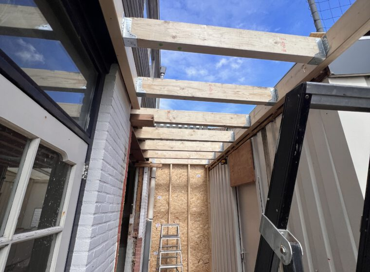

Maak eerst één vergelijkingsbasis
Laat iedere aanbieder rekenen met dezelfde tekening, maten, kozijnen en gewenste oplevering. Noteer het versienummer en de datum van die stukken. Anders lijkt de goedkoopste offerte aantrekkelijk, terwijl fundering, sloopwerk of kraankosten misschien ontbreken.
Onze calculator geeft eerst een casco-prijsindicatie als bandbreedte. Die is bedoeld om je plan te toetsen, niet als definitieve offerte. Op locatie worden bereikbaarheid, bestaande constructie en aansluitingen pas concreet.

Bookmark-checklist: zet deze 8 regels naast elkaar
- Voorbereiding: inmeten, tekeningen, constructieberekening, vergunningcheck en leges.
- Bouwplaats: sloop, afvoer, steiger, kraan, tijdelijke voorzieningen en herstel van tuin of bestrating.
- Constructie: fundering, staal, vloer, gevel- en dakopbouw en aansluiting op de bestaande woning.
- Schil: isolatie, waterdichting, kozijnen, type glas, deuren en hemelwaterafvoer.
- Installaties: welke elektra, verwarming, ventilatie en leidingvoorbereiding daadwerkelijk zijn inbegrepen.
- Oplevergrens: casco of turn-key; wie regelt stucwerk, vloer, schilderwerk en keuken?
- Prijsregels: btw, stelposten, hoeveelheden, indexatie en geldigheidsduur van de offerte.
- Uitvoering: startvenster, verwachte bouwtijd, betaalmomenten, oplevering en garantie.
Ontbreekt een regel? Vraag om “inbegrepen”, “niet inbegrepen” of een bedrag — niet om “dat zien we tijdens de bouw”. Lees ook wat bij een casco aanbouw hoort.
Vaste prijs, richtprijs of nacalculatie?
Controleer welke prijssoort letterlijk is afgesproken. Bij een vaste prijs ligt het risico anders dan bij een richtprijs of uren en materiaal op nacalculatie. ACM ConsuWijzer legt uit wanneer een dienstverlener de prijs mag verhogen. Vraag bij elke stelpost welke kwaliteit en hoeveelheid zijn aangenomen.
Leg meerwerk vast vóór uitvoering
Spreek af dat meerwerk pas start na een schriftelijke omschrijving met prijs- en planningseffect. Leg ook vast wie een onverwachte situatie meldt en welke bewijsstukken je krijgt. Controleer vergunningen zelf via het Omgevingsloket; ga niet uit van een losse aanname in een offerte.
Veelgestelde vragen
Is de laagste aanbouw-offerte meestal de beste?
Nee. Vergelijk eerst dezelfde scope, kwaliteit en risicoverdeling. Een ontbrekende fundering, kraan of afbouwpost kan het verschil later volledig omdraaien.
Hoe herken ik een onduidelijke stelpost?
Er staat alleen een bedrag, zonder productniveau, hoeveelheid of verrekenmethode. Vraag die drie onderdelen schriftelijk uit.
Wat moet ik vóór ondertekening bewaren?
Offerte, algemene voorwaarden, tekeningen, technische omschrijving, planning, betaalregeling en alle antwoorden op je vragen. Laat mondelinge toezeggingen toevoegen.
Eerst je plan en bandbreedte scherp?
Stel je aanbouw samen voor een casco-prijsindicatie. Daarna maken we de scope op locatie concreet voor een definitieve offerte.